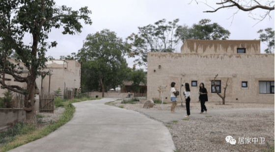

宁夏中卫大湾村：一个“复活”的村庄！
发布时间: 2022-04-02 4337 次浏览
-
大湾村位于宁夏中卫市沙坡头区常乐镇，毗邻黄河，与腾格里沙漠隔河相望，因地处黄河湾口而得名，是黄河岸边一个有着百年历史的古村落。随着时代发展，村民纷纷搬迁离开，留下的老房子大多年久失修，隐没在杂草丛生的村庄深处，村庄渐渐被遗忘。
几年前，一个偶然的机会，黄河宿集项目创始人陈祖品来到沙坡头区考察，对这个拥有大漠、黄河、绿洲、长城等独特资源的古村落“一见钟情”。
“第一次踏上这片土地，我就被这里独特的魅力深深吸引——就是那种传统村落的感觉，村庄的肌理和风貌都在，只不过需要重新梳理，赋予它新的内容。”陈祖品说，一番考量后，他决定在拆迁遗址上，复原村落整体风貌，唤起人们对西北乡村的记忆。
尊重自然、房子要给树让路，泥土、木头、石头都是就地取材，保留村庄原有的道路、生态和人文……为了“不辜负这片土地”，陈祖品和他的团队花费6年时间，坚持建筑与自然融合，利用乡村独特的地脉与文脉，打造出一处保留当地民居夯土建筑风格的民宿集群，为游客提供黄河与大漠兼具的目的地式旅游体验。
由于特色鲜明，黄河宿集自2018年12月投入运营以来，吸引了众多游客前来观光体验，成为宁夏的网红打卡地。2019年全年入住率达78%。
“住在这里，能够暂时从城市喧嚣的环境中脱离出来，涤荡心灵，感受久违的快乐，有一种现实与梦境的强烈反差。希望孩子也能从这里的各种体验中获得亲近大自然的能力。”来自上海的游客黄茜说。
在实现自身发展的同时，宿集通过“旅游+”的方式引导农民自主参与，依托生态养殖、农事体验等为周边村民搭建就业平台，带动100余人就业，年人均增收1.5万元。
50岁的拓兆锋在宿集经营着占地近500亩的农场，种着各类有机蔬菜，养着鸡、鸭、鹅、狗、骆驼和羊。依托节节攀升的游客接待量，拓兆锋的农场人气越来越旺，一家人的生活也明显改善。
除了鼓起来的腰包和好起来的日子，改变的还有村民植根内心的自信。与村里人去城里打工的路径相反，已在城里站稳脚跟的农村姑娘王燕每天都会坐着通勤车从城里去村里“赶集”。32岁的王燕是黄河宿集的一名“生活管家”。16岁那年，王燕离开农村去城里打工，一番打拼终于在城里买了房子安了家。兜兜转转一圈之后，又在去年选择回村里工作。
“农村空气好、环境也好，吃得健康、睡得踏实，看到客人们都这么喜欢我们农村，心里真的挺高兴！”言语间，王燕的脸上露着喜悦。在宿集，像她一样选择从城里回村上班的姐妹还有很多，月均4000多元的收入和“每天都有进步”的喜悦让她们获得感满满。
黄河文化旅游宣传平台
联系电话: 17753010787
版权所有：山东大学技术团队
技术支持：山东大学技术团队